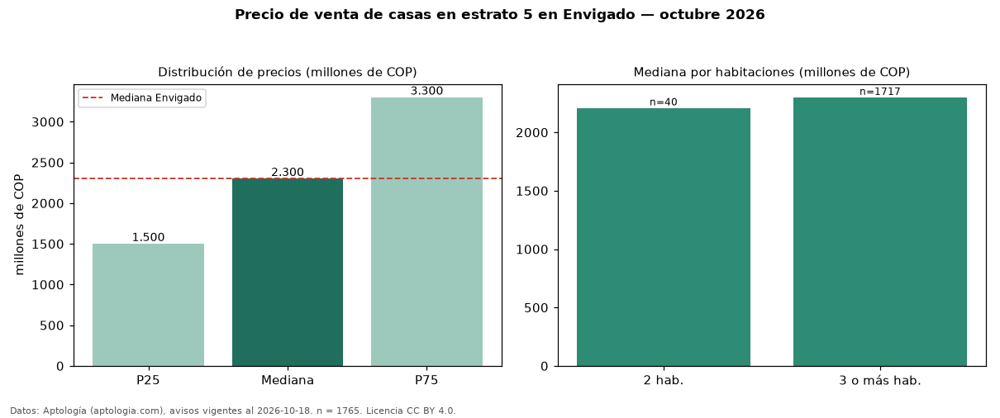

Precio de venta de casas en estrato 5 en Envigado — octubre 2026
Con 1.765 avisos vigentes, el precio mediano de casas en estrato 5 en venta en Envigado es COP 2,30 mil millones. Prácticamente coincide con la mediana de las casas en venta de Envigado (COP 2,30 mil millones, n = 3.713); este segmento reúne el 48 % de esos avisos. Por metro cuadrado, la mediana es COP 7,05 millones/m² (n = 1640), 0 % por encima de las casas en venta de Envigado (COP 7,02 millones/m²). El área mediana anunciada es 300 m². El segmento con más oferta es el de 3 o más habitaciones (1.717 avisos, mediana COP 2,30 mil millones); pasar de 2 habitaciones a 3 o más habitaciones cambia la mediana +4 %. La administración mediana declarada es COP 861.000 al mes (n = 1063). La mitad central de los avisos va de COP 1,50 mil millones a COP 3,30 mil millones (razón 2,2), una dispersión alta. Datos: Aptología (aptologia.com), CC BY 4.0 — https://www.aptologia.com/venta/envigado. Archivos: PDF, CSV con las cifras y gráfica PNG.

| Avisos únicos | 1765 |
|---|---|
| Percentil 25 | COP 1.500.000.000 |
| Mediana | COP 2.300.000.000 |
| Percentil 75 | COP 3.300.000.000 |
| Mediana por m² | COP 7.047.727 |
Fuente: avisos vigentes de portales inmobiliarios recopilados por Aptología, deduplicados (mínimo 30 avisos únicos por celda). Precios pedidos, no cerrados. Fecha: 2026-10-18.